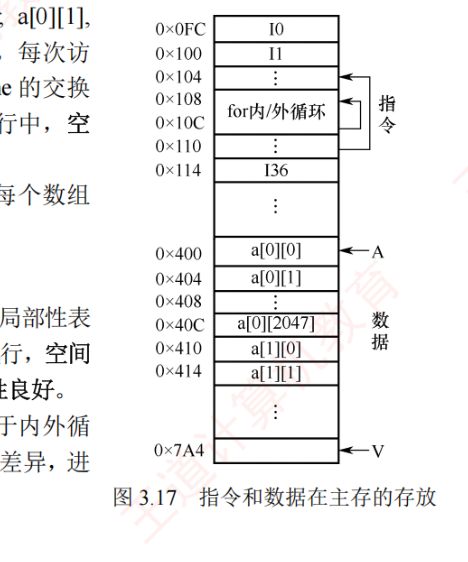
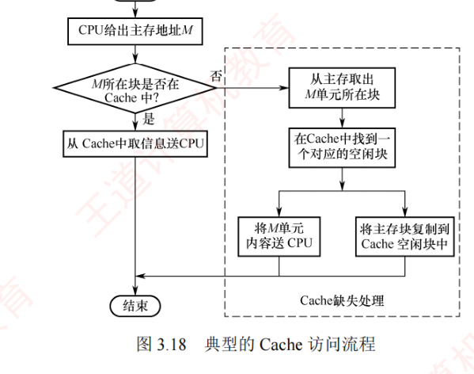
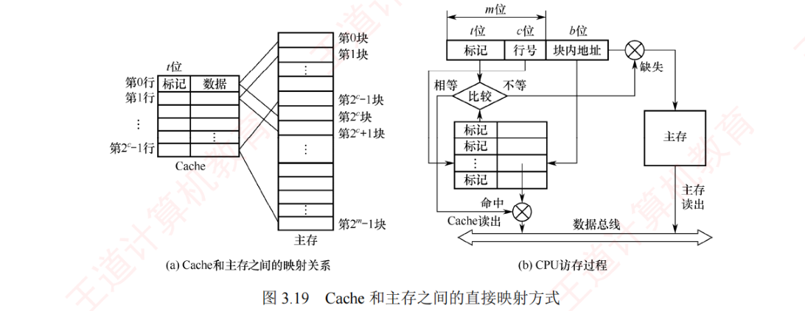
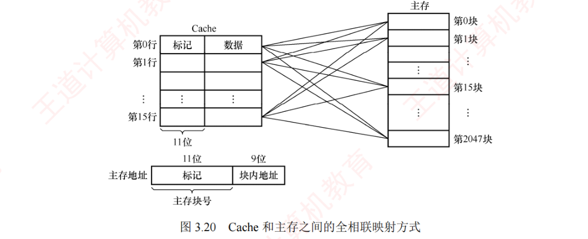
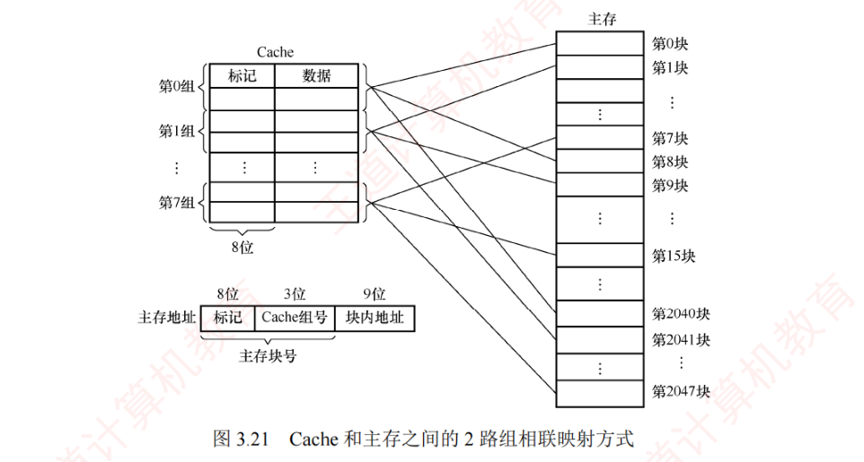
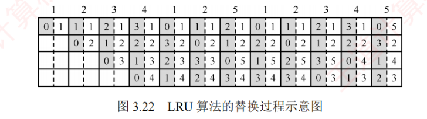
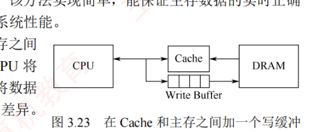
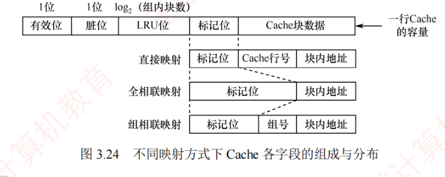
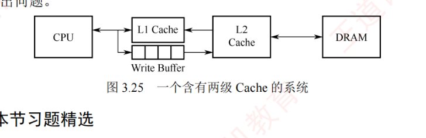

3.5 高速缓冲存储器
程序转移概率较高、数据分布较为离散，因此单纯依赖并行主存系统来提升主存效率是有限的。高速缓存（Cache）具有比主存更快的访问速度，在 CPU 与主存之间设置 Cache 可以显著提升存储系统的整体效率。Cache 由 SRAM 组成，通常集成在 CPU 内部。本节是全章分量最重的一节：局部性原理（3.5.1）、工作原理与命中率（3.5.2）、三种映射方式（3.5.3）、替换算法（3.5.4）、写策略（3.5.5）、容量计算（3.5.6）、分离与多级 Cache（3.5.7），综合题与选择题都从这里大量出题。
3.5.1程序访问的局部性原理
Cache 的设计基于程序访问的局部性原理，包括时间局部性和空间局部性：
- 时间局部性：如果某条指令或数据项当前被访问，则在不久的将来很可能再次被访问。这源于程序中存在的循环、重复调用的子程序，以及对同一数据的多次操作；
- 空间局部性：如果某个存储单元被访问，则其相邻的存储单元在不久的将来也很可能被访问。这是因为指令通常顺序存放并被顺序执行，而数组（或数据块）也往往以连续块的形式存储。
高速缓冲技术正是利用局部性原理，将程序当前活跃的部分数据暂存于容量小但速度极快的 Cache 中，使 CPU 的大多数访存操作直接在 Cache 中完成，从而显著提升程序执行效率。
【例 3.1】假设数组元素按行优先方式存放，考虑以下两个程序（设 \(M\) 和 \(N\) 为 2048，按字节编址，每个数组元素占 4 字节，指令和数据在主存中的存放情况如图 3.17 所示）：
程序 A: 程序 B:
int sumarrayrows(int a[M][N]) int sumarraycols(int a[M][N])
{ {
int i, j, sum = 0; int i, j, sum = 0;
for (i = 0; i < M; i++) for (j = 0; j < N; j++)
for (j = 0; j < N; j++) for (i = 0; i < M; i++)
sum += a[i][j]; sum += a[i][j];
return sum; return sum;
} }1）对于数组 a 的访问，哪个程序的空间局部性更好？哪个时间局部性更好？
2）对于 for 循环体中的指令访问，局部性如何？
解：
1）程序 A 与程序 B 的空间局部性差异显著。程序 A 按行访问数组 a：\(a[0][0], a[0][1], \cdots, a[0][2047], a[1][0], a[1][1], \cdots, a[1][2047], \cdots\)，访问顺序与存放顺序一致，由于连续访问的元素位于相邻地址，空间局部性良好。程序 B 按列访问数组 a：\(a[0][0], a[1][0], \cdots, a[2047][0], a[0][1], a[1][1], \cdots, a[2047][1], \cdots\)，访问顺序与存放顺序不一致，每次访问间隔跨越 2048 个元素，即 8192 字节；若主存与 Cache 的交换单位小于 8KB，则每次访问几乎都落在不同的 Cache 行中，空间局部性极差。两个程序中，数组 a 的时间局部性均较差，因为每个数组元素仅被访问一次。
2）对于 for 循环体中的指令访问，程序 A 与程序 B 的局部性表现相同。因为循环体中的指令在内存中连续存放、顺序执行，空间局部性良好；整个循环体执行 \(2048 \times 2048\) 次，时间局部性良好。
综上，尽管程序 A 与程序 B 执行的结果完全相同，但由于内层循环顺序不同，导致对数组 a 访问的空间局部性存在巨大差异，进而造成实际执行效率的显著不同。

3.5.2Cache 的基本工作原理
为便于 Cache 与主存交换信息，Cache 和主存都被划分为大小相等的块，Cache 块也称 Cache 行，每块由若干字节组成，块的位数称为块长（也称行长）。因为 Cache 的容量小于主存的容量，所以 Cache 中的块数要远少于主存中的块数。Cache 中仅保存主存中最活跃的若干块的副本，可按照某种策略预测 CPU 在未来一段时间内将访问的数据，并将其装入 Cache。
1. Cache 的访问过程
图 3.18 所示为典型的 Cache 访问流程。CPU 执行程序时，每当需要从主存读取指令或读/写数据，首先访问 Cache：若所需信息已在 Cache 中（称为 Cache 命中），则直接从 Cache 读取，无须访问主存；若未命中（也称为缺失），则需从主存中将该块所在的整个主存块装入 Cache，并将该块写入一个 Cache 行（若 Cache 已满，则按替换算法选择替换块）。此后 CPU 从 Cache 中获取所需数据。整个过程（包括命中判断、块调入、替换等）必须在单条指令执行期间完成，完全由硬件实现，对程序员完全透明。

上述访问流程是「先查 Cache、未命中再访主存」的串行方案；部分系统采用「并行访问」策略（同时查 Cache 和主存，若命中则中止主存访问），但考试中通常不涉及。
2. Cache 的命中率分析
CPU 所需访问的信息已在 Cache 中的概率称为 Cache 命中率。设程序执行期间 Cache 命中次数为 \(N_c\)，访问主存的次数为 \(N_m\)（未命中次数），则命中率 \(H\) 定义为
$$H = \frac{N_c}{N_c + N_m}$$命中时：CPU 直接从 Cache 读取数据，耗时为命中时间 \(T_c\)（访问 Cache 的时间）。未命中时：先从主存读取包含目标数据的一个主存块放入 Cache，再将所需数据送至 CPU，总耗时为 \(T_m + T_c\)，其中 \(T_m\) 称为缺失损失（从主存调入一个块所需的时间）。因此，Cache-主存系统的平均访问时间 \(T\) 为
$$T = HT_c + (1-H)(T_m + T_c) = T_c + (1-H)T_m$$等价地，也可写成：\(T\) = 命中时的访问时间 × 命中率 + 缺失时的访问时间 × 缺失率。
【例 3.2】假设 Cache 的速度是主存的 5 倍，且 Cache 的命中率为 95%，则采用 Cache 后，存储器性能提升多少（假设系统先访问 Cache，未命中时才访问主存）？
解：设 Cache 的存取时间为 \(t\)，则主存的存取时间为 \(5t\)。系统的平均访问时间 \(T\) 为
$$T = \text{命中时的访问时间} \times \text{命中率} + \text{缺失时的访问时间} \times \text{缺失率} = 0.95t + 0.05 \times (t + 5t) = 1.25t$$或等价地：\(T\) = 命中时的访问时间 + 缺失率 × 缺失损失 = \(t + 0.05 \times 5t = 1.25t\)。可知，使用 Cache 后，存储器性能提升至原来的 \(5t/1.25t = 4\) 倍。
根据 Cache 的读、写流程可知，实现 Cache 时需解决以下关键问题：
- 数据查找：如何快速判断所需数据是否在 Cache 中；
- 地址映射：主存块如何存放在 Cache 中，以及如何将主存地址转换为 Cache 地址；
- 替换策略：当 Cache 已满时，采用何种策略选择被替换的 Cache 行；
- 写入策略：如何在保证主存与 Cache 数据一致性的前提下，尽可能提升写操作效率。
3.5.3Cache 和主存的映射方式
由于 Cache 行远少于主存块数，为识别每个 Cache 行对应哪个主存块，需要为每行设置一个标记（记录其主存块编号），同时设置一位有效位，用于指示该行数据是否有效。系统启动或复位时，所有 Cache 行均无效；仅当主存块装入某 Cache 行后，其有效位才置为 1。地址映射是指将主存地址空间按一定规则映射到 Cache 地址空间，即决定主存块如何装入 Cache。常见的映射方式有三种：直接映射、组相联映射和全相联映射。
1. 直接映射
主存中的每一块只能装入 Cache 中的唯一指定位置；若该位置已有内容，则发生块冲突，原块被无条件替换（无须替换算法）。直接映射实现简单，但灵活性差——即使 Cache 中其他行空闲，也不能存放该主存块，因此块冲突概率最高，空间利用率最低。
直接映射关系可表示为
$$\text{Cache 行号} = \text{主存块号} \bmod \text{Cache 总行数}$$设 Cache 共有 \(2^c\) 行、主存共有 \(2^m\) 块，则主存的第 0 块、第 \(2^c\) 块、第 \(2^{c+1}\) 块……均映射到 Cache 的第 0 行；主存的第 1 块、第 \(2^c+1\) 块、第 \(2^{c+1}+1\) 块……均映射到 Cache 的第 1 行，以此类推。由此可见，主存块号的低 \(c\) 位即为对应的 Cache 行号。为标识来源，每个 Cache 行设置一个长度为 \(t = m - c\) 的标记，当某主存块调入 Cache 后，将其块号的高 \(t\) 位存入对应 Cache 行的标记字段中（见图 3.19）。

直接映射的地址结构如下：
| 标记（\(t = m-c\) 位） | Cache 行号（\(c\) 位） | 块内地址 |
CPU 访存过程：根据访存地址中间的 \(c\) 位确定 Cache 行，将该 Cache 行中的标记与主存地址的高 \(t\) 位进行比较：若标记相等且有效位为 1，则 Cache 命中，根据地址低位的块内地址从该 Cache 行中读取数据；若标记不等或有效位为 0，则 Cache 未命中，CPU 需从主存中读取该地址所在的块，将其装入对应 Cache 行，置有效位为 1、更新标记为地址高 \(t\) 位，并将所需数据送至 CPU。
2. 全相联映射
主存中的每一块可以装入 Cache 中的任意位置（见图 3.20）。每行的标记用于指出该行来自主存的哪一块，因此 CPU 访存时需要与所有 Cache 行进行比较。
优点：① Cache 块冲突概率低，只有所有 Cache 行都被占用时才会发生冲突；② 空间利用率高；③ 命中率高。缺点：① 标记的比较速度较慢；② 实现成本较高，通常需要采用按内容寻址的相联存储器。

全相联映射的地址结构如下：
| 标记（\(\log_2\)主存块数 位） | 块内地址 |
CPU 访存过程：首先将主存地址的高位标记（位数 = \(\log_2\)主存块数）与 Cache 各行的标记进行比较，若有一个相等且对应有效位为 1，则 Cache 命中，根据地址低位的块内地址从该 Cache 行中读出信息；若都不相等或有效位为 0，则 Cache 未命中，CPU 从主存中读取该地址所在块的信息，装入 Cache 的任意一个空闲行，置有效位为 1、设置标记，同时将所需数据送至 CPU。
3. 组相联映射
将 Cache 划分为 \(Q\) 个大小相等的组，每个主存块仅能映射到固定组中的任意一行，即组间采用直接映射，组内采用全相联映射（见图 3.21）。它是直接映射与全相联映射的一种折中方案：当 \(Q=1\)（整个 Cache 为一个组）时，退化为全相联映射；当 \(Q =\) Cache 总行数（每组仅 1 行）时，退化为直接映射。设每组包含 \(r\) 个 Cache 行，则称为 \(r\) 路组相联映射。路数 \(r\) 越大，组内可选位置越多，块冲突概率越低，但所需的比较器数量和控制逻辑也更加复杂；合理选择 \(r\)，可在硬件成本接近直接映射的同时，获得接近全相联的性能。

组相联映射关系可表示为
$$\text{Cache 组号} = \text{主存块号} \bmod \text{Cache 组数}(Q)$$组相联映射的地址结构如下：
| 标记 | 组号 | 块内地址 |
CPU 访存过程：首先根据访存地址中间的组号确定目标 Cache 组，将该组内所有 Cache 行的标记与主存地址的高位标记并行比较：若有匹配且对应有效位为 1，则 Cache 命中，根据块内地址从该行读取数据；若所有行均不匹配或匹配行的有效位为 0，则 Cache 未命中，CPU 从主存读取该地址所在块，将其装入该组中任意一个空闲行（若无空闲行，则按替换算法选择一行），置有效位为 1、写入标记，并将所需数据送至 CPU。
在 Cache 容量和主存块大小相同的条件下，三种映射方式的特性对比如下：
| 对比项 | 直接映射 | 组相联映射 | 全相联映射 |
|---|---|---|---|
| 命中率 | 最低 | 介于两者之间 | 最高 |
| 判断开销与所需时间 | 最小、最快 | 介于两者之间 | 最大、最慢 |
| 标记位开销 | 最少 | 介于两者之间 | 最多 |
3.5.4Cache 中主存块的替换算法
在采用全相联映射或组相联映射方式时，当向 Cache 传送一个新主存块而 Cache（或 Cache 组）已满，就需要使用替换算法挑选被替换的 Cache 行。而在直接映射中，每个主存块只能映射到唯一的 Cache 行，当该行已被占用时直接覆盖旧块，无须替换算法。常用的替换算法包括随机（RAND）、先进先出（FIFO）和最近最少使用（LRU）算法。
- 随机（RAND）算法：随机选择一个 Cache 行进行替换。实现简单，但未利用程序访问的局部性，命中率通常较低；
- 先进先出（FIFO）算法：替换最早载入的 Cache 行。实现较容易，但未考虑局部性原理——最早进入的块可能是当前热点数据，因此命中率不高；
- 最近最少使用（LRU）算法：基于程序访问的局部性原理，优先替换最近最久未被访问的 Cache 行。其平均命中率通常高于 FIFO，LRU 算法是考查重点。
LRU 的硬件实现：为每组 Cache 维护一组计数器（常称 LRU 替换位），用来记录各 Cache 行的访问间隔顺序。LRU 位的位数取决于组的路数：2 路组相联需 1 位 LRU 位，4 路组相联需 2 位 LRU 位。
【例】假定采用 4 路组相联，5 个主存块 {1, 2, 3, 4, 5} 映射到同一 Cache 组，访问序列为 {1, 2, 3, 4, 1, 2, 5, 1, 2, 3, 4, 5}，LRU 替换过程如图 3.22 所示。图中左边的数字表示对应 Cache 行的 LRU 计数值（反映最近访问时间顺序），右侧数字为主存块号。计数器的更新规则：
- 命中时：所命中行的计数器清零，比其低的计数器加 1，其余不变；
- 未命中且有空闲行时：新装入行的计数器置 0，其他非空行全加 1；
- 未命中且无空闲行时：替换计数值最大的行（本例中为 3），新装入行的计数器置 0，其余全加 1。

当被频繁访问的主存块超过 Cache 组内的行数时，可能使缓存块失效。例如，若访问序列变为 {1, 2, 3, 4, 5, 1, 2, 3, 4, 5, …}，而 Cache 每组仅有 4 行，则每次访问第 5 个块都会驱逐下一个将被访问的块，导致命中率降为 0，这种现象称为抖动。
- 最不经常使用（LFU）算法：替换一段时间内被访问次数最少的 Cache 行。每行设置一个计数器，新行装入时计数器初始化为 0，每次访问被访行的计数器加 1；替换时选择计数值最小的行。
3.5.5Cache 的一致性问题
由于 Cache 中的内容是主存块的副本，当对 Cache 进行写操作时，必须采用适当的写策略以维持 Cache 与主存数据的一致性。根据写操作是否命中 Cache，可分为两类情况：写命中是指 CPU 要写入的主存地址所在的块当前已在 Cache 中；反之则为写未命中。
1. Cache 写命中的处理方法
（1）全写法（直写法，Write Through）
当 CPU 对 Cache 写命中时，数据同时写入 Cache 和主存。由于主存始终与 Cache 保持同步，因此被替换的块可直接覆盖，无须写回。该方法实现简单，能保证主存数据的实时正确性，但缺点是每次写操作都需访问主存，降低了系统性能。
为缓解直写法的性能开销，可在 Cache 与主存之间增设写缓冲（Write Buffer），如图 3.23 所示：CPU 将数据同时写入 Cache 和写缓冲，由缓冲器异步将数据写入主存。写缓冲可缓解 CPU 与主存之间的速度差异，但在高频写场景下，写缓冲可能会溢出。

（2）回写法（Write Back）
当 CPU 对 Cache 写命中时，仅将数据写入 Cache，不立即写入主存，仅在该块被替换出 Cache 时才写回主存。这种方法减少了访存次数、提高了 Cache 效率，但存在数据不一致的风险。为避免不必要的写回操作，每个 Cache 行设置一个修改位（又称脏位）：若修改位为 1，表示该行数据已被修改，替换时必须写回主存；若修改位为 0，表示该行数据与主存一致，替换时可直接覆盖。
2. Cache 写不命中的处理方法
（1）写分配法（Write Allocate）
当发生写不命中时，先将数据写入主存对应的单元，然后将该主存块调入 Cache 的一个空闲行中。该方法利用了空间局部性原理，但每次写不命中都要将主存块加载到 Cache 中（通常与回写法搭配使用）。
（2）非写分配法（Not-Write-Allocate）
当发生写不命中时，直接将数据写入主存，不将该块调入 Cache（通常与直写法搭配使用）。
3.5.6Cache 容量的计算举例
在计算 Cache 容量时，需要考虑 Cache 的数据部分和每行的标记信息，即
$$\text{Cache 总容量} = (\text{每行标记位数} + \text{每行数据位数}) \times \text{Cache 总行数}$$每行的标记信息通常包括有效位、脏位和 LRU 替换位。其中，有效位和标记位是所有 Cache 行必须包含的；脏位仅在采用回写策略时存在；LRU 替换位仅在使用 LRU 算法时存在，其位数取决于组的路数（组内行数）。图 3.24 展示了不同映射方式下 Cache 各字段的组成与分布。

【例 3.3】假设计算机的主存地址空间大小为 256MB，按字节编址，其数据 Cache 有 8 个 Cache 行，行长为 64B。请回答：
1）若不考虑脏位和替换算法控制位，并采用直接映射方式，求该数据 Cache 的总容量；
2）若采用直接映射方式，主存地址为 3200（十进制）的主存块对应的 Cache 行号是多少？若采用 2 路组相联映射，对应的 Cache 组号及可能存在的行号是多少？
3）以直接映射方式为例，简述访存过程（设访存地址为 0123456H）。
解：
1）Cache 总容量 = 数据信息容量 + 标记信息容量（包括有效位和标记位）。本题不考虑脏位和替换算法控制位：主存地址位数为 28 位（主存地址空间为 256MB = \(2^{28}\)B）；块内地址位数为 6 位（行长 64B = \(2^6\)B）；Cache 行号为 3 位（Cache 有 8 行 = \(2^3\) 行）。标记信息位数 = 28 − 6 − 3 = 19 位，每行含 1 位有效位 + 19 位标记位 = 20 位标记信息；每行数据部分为 64B = 512 位。因此，Cache 总容量为 \(8 \times (512 + 1 + 19) = 8 \times 532 = 4256\) 位。
2）主存地址 3200 所处的块号为 \(3200\text{B} / 64\text{B} = 50\)。在直接映射方式中，Cache 有 8 行，行号 = 50 mod 8 = 2，故对应的 Cache 行号为 2。在组相联映射方式中，组间采用直接映射，组号 = 50 mod 4 = 2（2 路组相联共 8/2 = 4 组），则可映射到第 2 组中的任意一行，对应的 Cache 行号为 4 或 5。
3）在直接映射方式中，28 位主存地址划分为 19 位的标记位、3 位的行号、6 位的块内地址，即 0123456H = 0000 0001 0010 0011 0100 0101 0110 中，0000 0001 0010 0011 010 为标记，001 为行号，010110 为块内地址。访存过程：根据行号 001（即 1 号行）访问 Cache 第 1 行，比较其标记与地址高 19 位，并检查有效位；若匹配且有效位为 1，则命中，按块内地址 010110 从该行中读取数据并送至 CPU；否则未命中，从主存读取该块，装入 Cache 第 1 行，更新标记为地址高 19 位，并置有效位为 1。（注：教材原文此处先写「001 为块号」，又写「根据行号 010 访问」，001 与 010 自相矛盾，系原书排印瑕疵；按 0123456H 计算，块号 = 1193046/64 = 18641，行号 = 18641 mod 8 = 1，即行号 001、第 1 行，本页按此口径统一。）
3.5.7Cache 的应用
1. 分离 Cache
2. 多级 Cache
现代计算机普遍采用多级 Cache 结构。以两级为例，按距离 CPU 的远近分别称为 L1 Cache 和 L2 Cache：L1 离 CPU 最近，速度最快、容量较小；L2 较远，速度较慢、容量较大。通常 L1 级会采用分离的指令 Cache 和数据 Cache 设计，其中 L1 数据 Cache 在写操作中采用写分配法（写不命中时加载一块）与回写法（命中时不立即写主存）相结合的策略。
图 3.25 展示了一个典型的两级 Cache 系统。通常，L1 和 L2 Cache 均采用回写法。当 L1 发生写命中时，仅更新 L1；当 L1 的块被替换时，若为脏块，则写回 L2，L2 同理在替换时写回主存。由于 L2 Cache 的访问速度远高于主存，L1 无须在写命中时访问主存，仅需写本地 Cache 即可完成写操作，后续的脏块写回由 L2 高效承接，从而有效缓解因写操作导致的写缓冲饱和或溢出问题。
